3GPP 5G-NR 随笔（1-4）：NR-RMSI特征与频域位置
1. 什么是RMSI？
5G NR中，支持on-demand SIB传输，考虑尽可能快速同步与接入，将必要的系统信息分为两部分：MIB与RMSI（Remaining minimum system information），其它非必要信息，有需求时再读取。可知RMSI实质是即是SIB1，通知UL freq、TDD cfg等信息。
NB支持wider BW与mixed numerology,SSB的位置并不固定，RMSI的传输设计，主要考虑与SSB的关系，例如如何在不同numerology下与SSB复用，时域上RMSI CORESET的监测窗位置等，如下图示意。
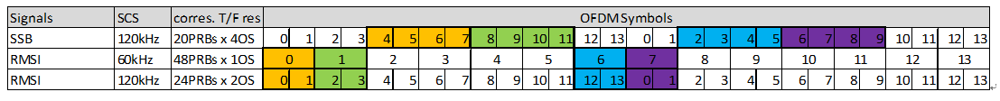
2. RMSI的带宽设计约束
SSB与RMSI CORESET的复用关系，可以分为三种pattern：
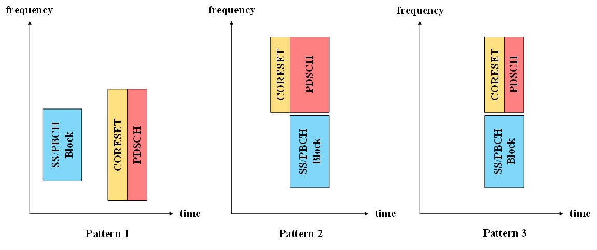
为节省MIB payload，预定义各种pattern下SSB与RMSI CORESET的PRB offset不同组合，在MIB中通过pdcchConfigSIB1参数的前4bit进行通知。
设计不同RMSI Pattern PRB offset的约束如下：
I、min CH BW
- SSB SCS 15KHz，min CH BW 5MHz；
- SSB SCS 30KHz，min CH BW 10MHz；
- SSB SCS 120KHz，min CH BW 50MHz；
- SSB SCS 240KHz，min CH BW 100MHz；
II、min UE BW
- Fc < 6GHz，min UE BW 20MHz；
- Fc > 6GHz，min UE BW 200MHz；
II、min CH BW =< RMSI BW =< min UE BW
IV、Patter 2/3, only for Fc > 6GHz
3. RMSI Patter 1 PRB offset
Pattern 1即是TDM方式，其各种组合如下：
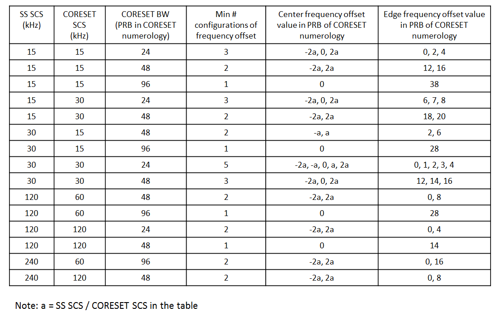
下面给出其中若干配置的实例，以便于理解。
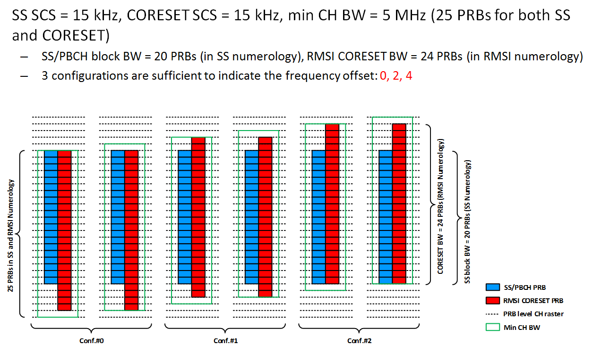
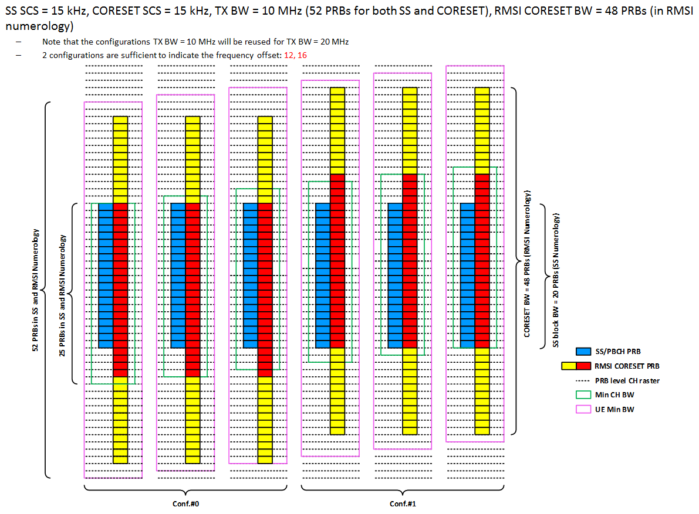
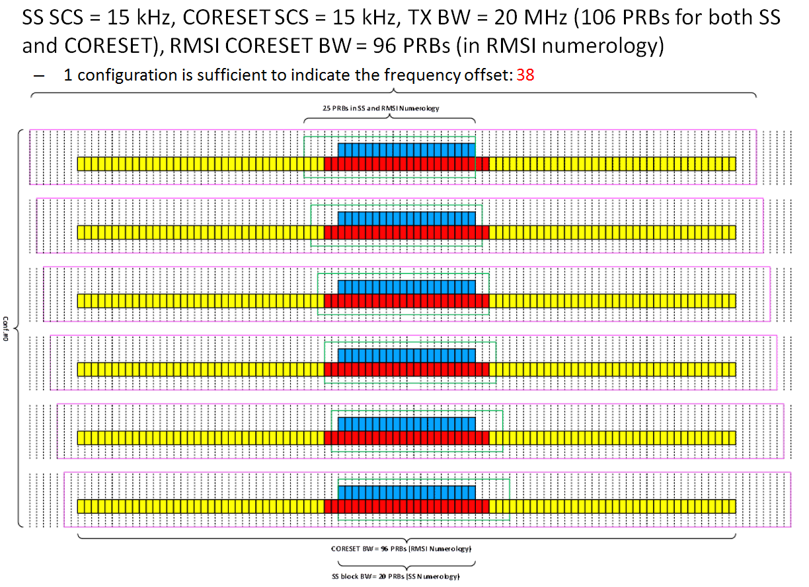
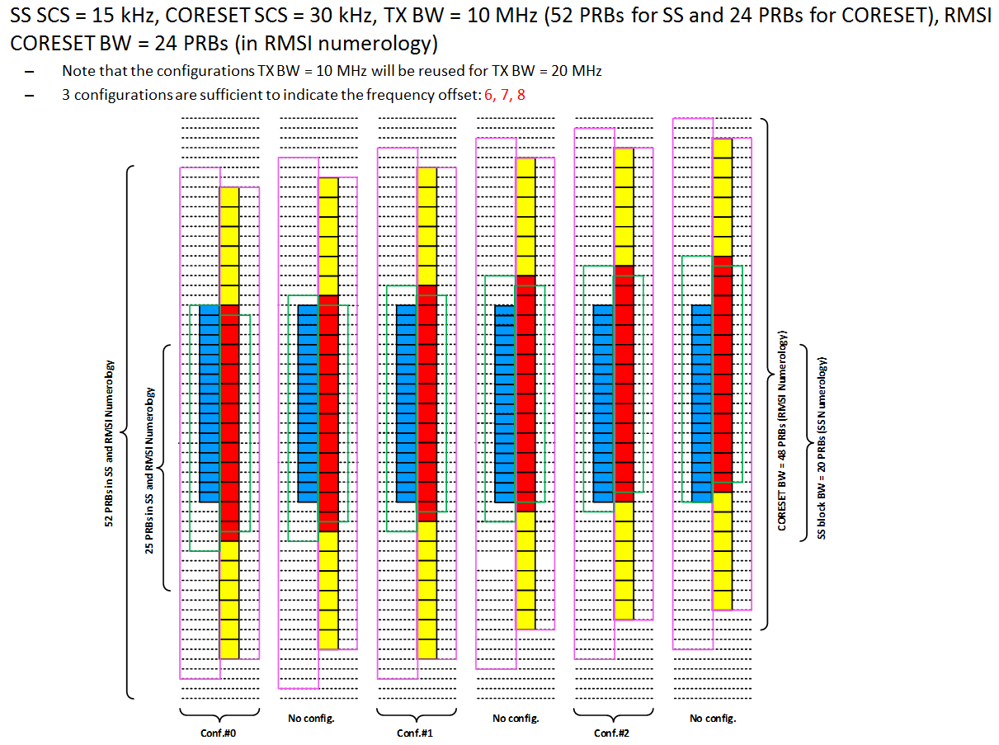
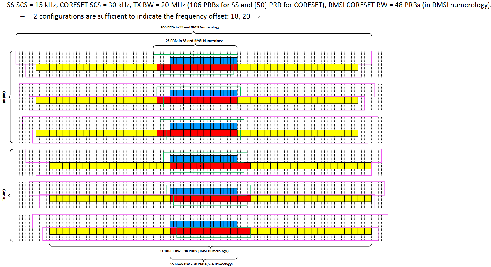
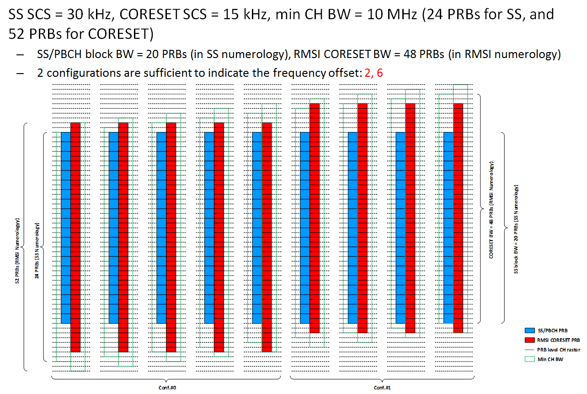
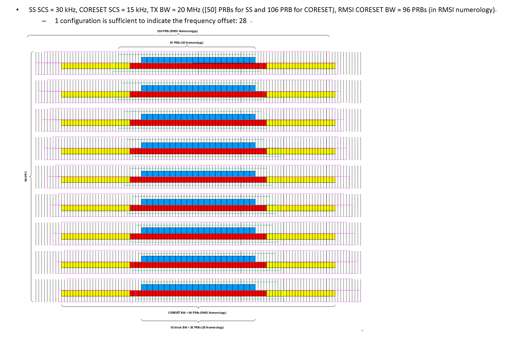
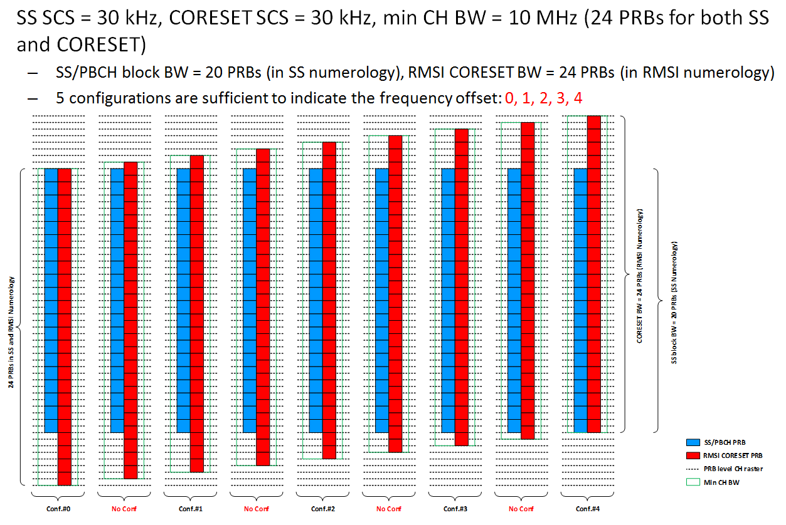
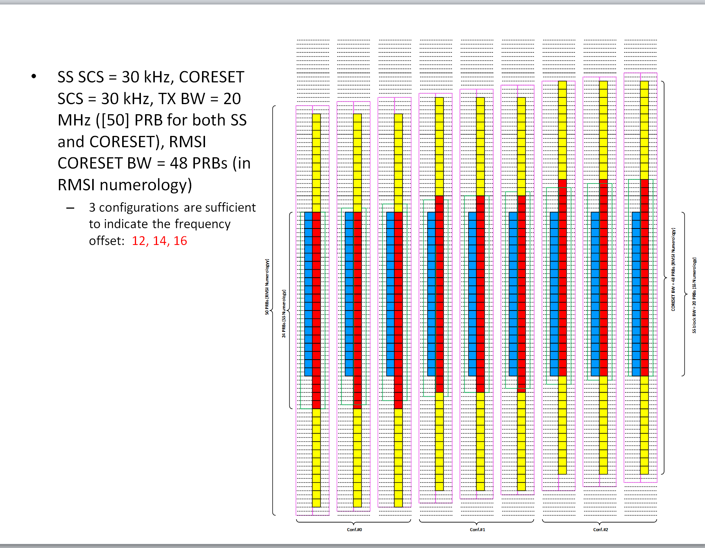
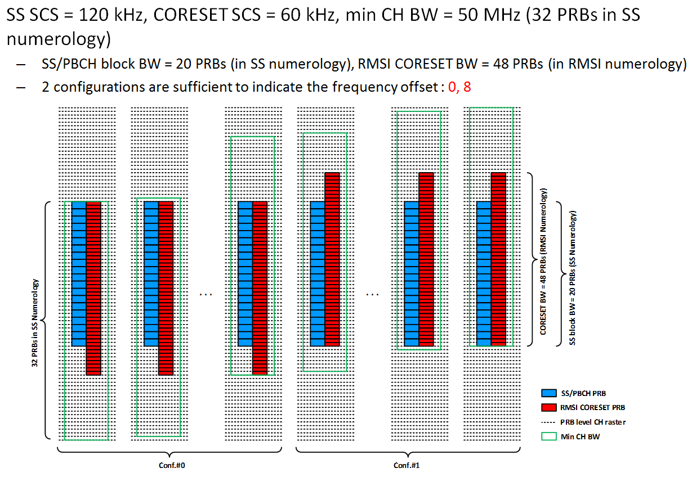
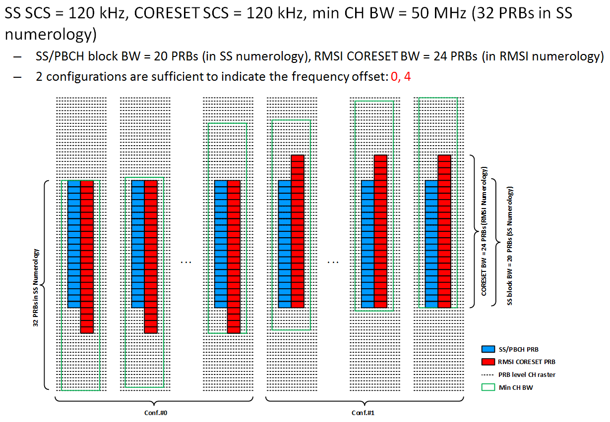
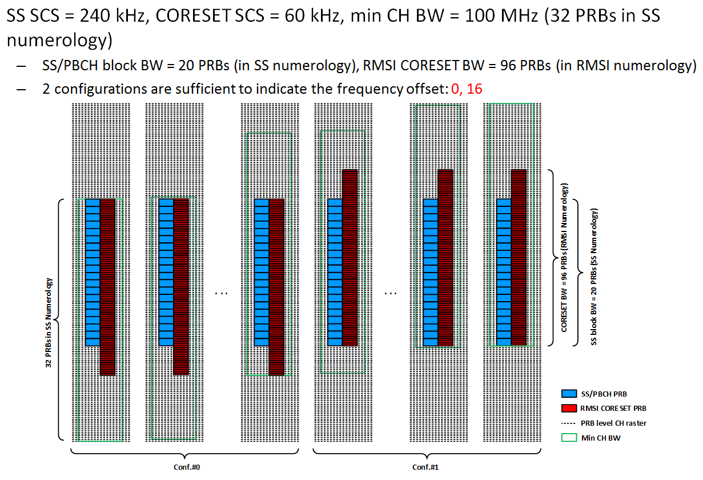
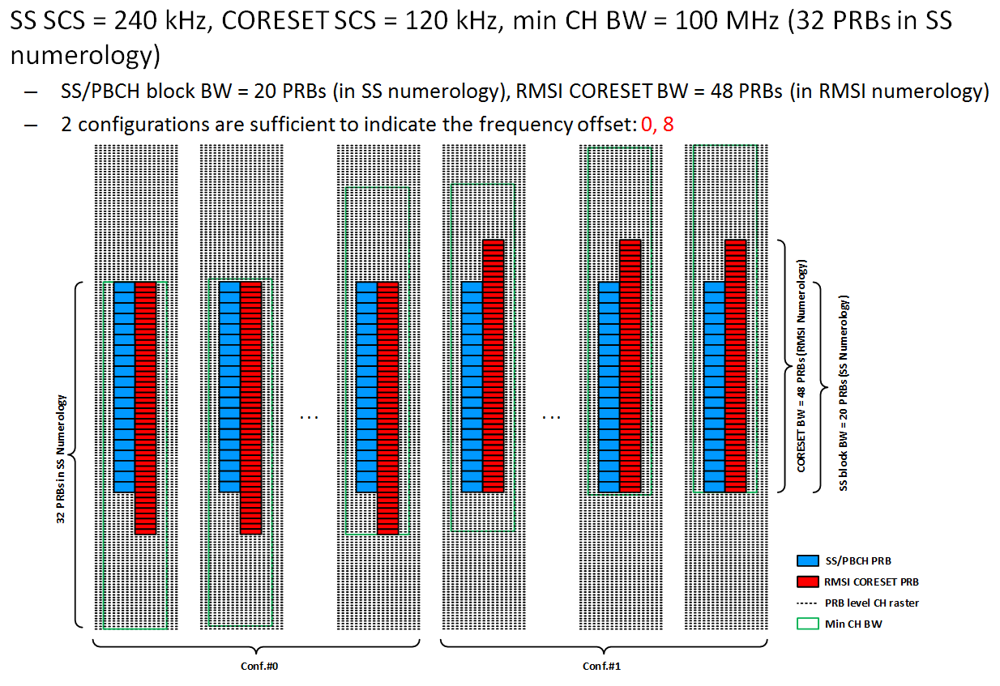
４. reference
i. R1-1721709 Summary of offline discussion on RMSI CORESET configuration， Samsung.
ii. R1-1721605 Summary of Offline Discussion on RMSI， CATT